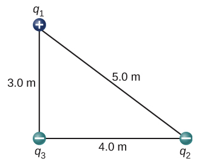

D1.6 Problems#
Problem D1.1
A 2.5 g copper penny is given a charge of \(−2.0\times 10^{−9}\) C.
How many excess electrons are on the penny?
By what percent do the excess electrons change the mass of the penny?
This problem is a slightly modified version from OpenStax. Access for free here
Show code cell source
%reset -f
from math import ceil
# provided info
Q = -2.0E-9
M = 2.5E-3
# loop-up info:
q = -1.602E-19 #charge of electron
m = 9.109E-31 #mass of electron
# Part 1
N = ceil(Q/q)
print('Number of excess electrons: '+str(N))
# Part 2
#percent change: (change/original)*100
percent = ((N*m)/M)*100.
print('Percent change in mass: '+str(percent))
Show code cell output
Number of excess electrons: 12484394507
Percent change in mass: 4.548813982570519e-16
Problem D1.2
Point charges \(q_1 = 50.0~\mu\)C and \(q_2 = −25.0~\mu\)C are placed \(1.00\) m apart. What is the force on a third charge \(q_3 = 20.0~\mu\)C placed midway between \(q_1\) and \(q_2\)?
This problem is a slightly modified version from OpenStax. Access for free here
Show code cell source
%reset -f
#import numpy
import numpy as np
# provided info
q1 = 50.0E-6
q2 = -25.0E-6
q3 = 20.0E-6
# let q1 be at x0 and q2 at x = 1.00
x1 = 0.00
x2 = 1.00
x3 = 0.500
# look-up info
k = 8.99E9
r31 = np.sqrt((x3 - x1)**2)
f31x = (k*q1*q3)*(x3 - x1)/r31**3 #force component in x due to q1 on q3
r32 = np.sqrt((x3 - x2)**2)
f32x = (k*q2*q3)*(x3 - x2)/r32**3 #force component in x due to q2 on q3
f = f31x + f32x
print('Net force on q3: '+str(f)+' N')
Show code cell output
Net force on q3: 53.94 N
Problem D1.3
Where must \(q_3\) of the preceding problem be placed so that the net force on it is zero?
This problem is a slightly modified version from OpenStax. Access for free here
Show code cell source
%reset -f
#import libraries
import sympy as sym
# provided info
q1 = 50.0E-6
q2 = -25.0E-6
q3 = 20.0E-6
# let q1 be at x0 and q2 at x = 1.00
x1 = 0.00
x2 = 1.00
# look-up info
k = 8.99E9
# declare unknown
x3 = sym.Symbol('x3')
# set net force = 0
eq = (k*q1*q3)*(x3 - x1)/(sym.sqrt((x3 - x1)**2))**3 + (k*q2*q3)*(x3 - x2)/(sym.sqrt((x3 - x2)**2))**3
sol = sym.solve(eq,x3)
print('Location of q3 with no net force: x = '+str(sol[0])+' m')
Show code cell output
Location of q3 with no net force: x = 3.41421356237309 m
Problem D1.4
Two small balls, each of mass \(5.0\) g, are attached to silk threads \(50.0\) cm long, which are in turn tied to the same point on the ceiling, as shown below. When the balls are given the same charge \(Q\), the threads hang at \(5.0^\circ\) to the vertical, as shown below.
What is the magnitude of \(Q\)?
What are the signs of the two charges?
This problem is a slightly modified version from OpenStax. Access for free here
Show code cell source
%reset -f
#import library
import sympy as sym
import numpy as np
# given parameters
m1 = 5.0E-3
m2 = 5.0E-3
l = 50.0E-2
theta = 5.0*np.pi/180.0
# look-up values
k = 8.99E9
g = 9.81
# Part 1
# ------
#find x-positions
x1 = -l*sym.sin(theta)
x2 = l*sym.sin(theta)
#declare unknowns:
Ft = sym.Symbol('Ft')
Q = sym.Symbol('Q')
# x-equation
eqx = (k*Q*Q)*(x2 - x1)/(sym.sqrt((x2 - x1)**2))**3 - Ft*sym.sin(theta)
#y-equation
eqy = Ft*sym.cos(theta) - m2*g
#solve it
sol = sym.solve((eqx,eqy),(Ft,Q))
print('The charge of Q is: '+str(sol[0][1])+' C, or : '+str(sol[1][1])+' C')
Show code cell output
The charge of Q is: -6.02159523661844e-8 C, or : 6.02159523661844e-8 C
Problem D1.5
Point charges \(q_1 = 2.0~\mu\)C and \(q_2 = 4.0~\mu\)C are located at \(\vec{r}_1 = (4.0\hat{i} - 2.0\hat{j} + 5.0\hat{k})\) m and \(\vec{r}_2 = (8.0\hat{i} + 5.0\hat{j} - 9.0\hat{k})\) m, respectively. What is the force of \(q_2\) on \(q_1\)?
This problem is a slightly modified version from OpenStax. Access for free here
Show code cell source
%reset -f
import numpy as np
#declare given parameters
q1 = 2.0E-6
q2 = 4.0E-6
#look-up
k = 8.99E9
r1 = np.array([4.0, -2.0, 5.0]) #arrays
r2 = np.array([8.0, 5.0, -9.0])
d12 = np.sqrt((r1[0] - r2[0])**2 + (r1[1] - r2[1])**2 + (r1[2] - r2[2])**2) #pythagorean theorem
r12 = r1 - r2 #directed line segment from source (charge 2) to test (charge1)
f12 = (k*q1*q2)*r12/d12
print('The force vector on q1 due to q2 is '+str(f12)+ ' N')
Show code cell output
The force vector on q1 due to q2 is [-0.01780694 -0.03116215 0.06232431] N
Problem D1.6
The charges \(q_1 = 2.0\times 10^{-7}\) C, \(q_2 = -4.0\times 10^{-7}\) C, and \(q_3 = -1.0\times 10^{-7}\) C are placed at the corners of the triangle shown below. What is the force on \(q_1\)?
This problem is a slightly modified version from OpenStax. Access for free here
Show code cell source
%reset -f
import numpy as np
q1 = 2.0E-7
q2 = -4.0E-7
q3 = -1.0E-7
k = 8.99E9
#let q3 be at origin of reference frame
r1 = np.array([0.0, 3.0])
r2 = np.array([4.0, 0.0])
r3 = np.array([0.0, 0.0])
d12 = np.sqrt((r1[0] - r2[0])**2 + (r1[1] - r2[1])**2) #pythagorean theorem
d13 = np.sqrt((r1[0] - r3[0])**2 + (r1[1] - r3[1])**2) #pythagorean theorem
r12 = r1 - r2
r13 = r1 = r3
f12 = (k*q1*q2)*r12/d12
f13 = (k*q1*q3)*r13/d13
f = f12 + f13
print('The force vector on q1 due to q2 and q3 is '+str(f)+ ' N')
Show code cell output
The force vector on q1 due to q2 and q3 is [ 0.00057536 -0.00043152] N
Problem D1.7
On a typical clear day, the atmospheric electric field points downward and has a magnitude of approximately \(100.0\) N/C.
Compare the gravitational and electric forces on a small dust particle of mass \(2.0\times 10^{−15}\) g that carries a single electron charge.
What is the acceleration (both magnitude and direction) of the dust particle?
This problem is a slightly modified version from OpenStax. Access for free here
Show code cell source
%reset -f
import numpy as np
#declare variable
E = -100.0 #positive up
m = 2.0E-18
q = -1.602E-19
g = 9.81
fgy = -m*g
fEy = q*E
ratio = np.abs(fgy/fEy)
print('The ratio between gravitational and electric forces is: '+str(ratio))
f_net = fEy + fgy
a = f_net/m
print('The acceleration is: '+str(a)+' m/s^2')
Show code cell output
The ratio between gravitational and electric forces is: 1.2247191011235956
The acceleration is: -1.8000000000000012 m/s^2
Problem D1.8
What is the electric field at a point where the force on a \(−2.0\times 10^{−6}\) C charge is \((4.0\hat{i} − 6.0\hat{j})\times 10^{−6}\) N?
This problem is a slightly modified version from OpenStax. Access for free here
Show code cell source
%reset -f
import numpy as np
q = -2.0E-6
f = np.array([4.0, -6.0])*1E-6
E = f/q
print('The electric field vector is: '+str(E)+' N/C')
Show code cell output
The electric field vector is: [-2. 3.] N/C
Problem D1.9
Can you arrange the two point charges \(q_1 = -2.0\times 10^{-6}\) C and \(q_2 = 4.0\times 10^{-6}\) C along the x-axis so that \(E = 0\) at the origin?
This problem is a slightly modified version from OpenStax. Access for free here
Show code cell source
%reset -f
import sympy as sym
import numpy as np
q1 = -2.0E-6
q2 = 4.0E-6
k = 8.99E9
x = 0.0
x1 = sym.Symbol('x1')
x2 = sym.Symbol('x2')
d1 = sym.sqrt((x - x1)**2)
d2 = sym.sqrt((x - x2)**2)
E1 = k*q1*(x - x1)/d1**3
E2 = k*q2*(x - x2)/d2**3
eq = E1 + E2
sol = sym.solve(eq,x1,x2)
print('The E-field will be zero if the (x1, x2) = '+str(sol[1])+ ' m')
val = input('Do you want to test it? [Y/N]')
if val == 'Y' or val == 'y':
xb = input("Enter a x2 position (in m): ")
xb = float(xb)
xa = 0.707106781186548*xb
da = sym.sqrt((x - xa)**2)
db = sym.sqrt((x - xb)**2)
Ea = k*q1*(x - xa)/da**3
Eb = k*q2*(x - xb)/db**3
E = Ea + Eb
print('The electric field at x = 0 is: '+str(E)+' N/m')
Show code cell output
The E-field will be zero if the (x1, x2) = (0.707106781186548*x2, x2) m
---------------------------------------------------------------------------
StdinNotImplementedError Traceback (most recent call last)
Input In [9], in <cell line: 26>()
23 sol = sym.solve(eq,x1,x2)
24 print('The E-field will be zero if the (x1, x2) = '+str(sol[1])+ ' m')
---> 26 val = input('Do you want to test it? [Y/N]')
27 if val == 'Y' or val == 'y':
28 xb = input("Enter a x2 position (in m): ")
File ~/opt/anaconda3/lib/python3.9/site-packages/ipykernel/kernelbase.py:1072, in Kernel.raw_input(self, prompt)
1065 """Forward raw_input to frontends
1066
1067 Raises
1068 ------
1069 StdinNotImplementedError if active frontend doesn't support stdin.
1070 """
1071 if not self._allow_stdin:
-> 1072 raise StdinNotImplementedError(
1073 "raw_input was called, but this frontend does not support input requests."
1074 )
1075 return self._input_request(
1076 str(prompt),
1077 self._parent_ident["shell"],
1078 self.get_parent("shell"),
1079 password=False,
1080 )
StdinNotImplementedError: raw_input was called, but this frontend does not support input requests.
Problem D1.10
Point charges \(q_1 = q_2 = 4.0\times 10^{-6}\) C are fixed on the x-axis at \(x = −3.0\) m and \(x = 3.0\) m. What charge q must be placed at the origin so that the electric field vanishes at (x,y) = (0,3) m?
This problem is a slightly modified version from OpenStax. Access for free here
Show code cell source
%reset -f
import sympy as sym
q1 = 4.0E-6
q2 = 4.0E-6
k = 8.99E9
x1 = -3.0
y1 = 0.0
x2 = 3.0
y2 = 0.0
x3 = 0.0
y3 = 0.0
x = 0.0
y = 3.0
d1 = sym.sqrt((x - x1)**2 + (y - y1)**2)
d2 = sym.sqrt((x - x2)**2 + (y - y2)**2)
d3 = sym.sqrt((x - x3)**2 + (y - y3)**2)
q3 = sym.Symbol('q3')
E1x = k*q1*(x - x1)/d1**3
E1y = k*q1*(y - y1)/d1**3
E2x = k*q2*(x - x2)/d2**3
E2y = k*q2*(y - y2)/d2**3
E3x = k*q3*(x - x3)/d3**3
E3y = k*q3*(y - y3)/d3**3
eqx = E1x + E2x + E3x
eqy = E1y + E2y + E3y
sol = sym.solve((eqx,eqy),q3)
print('The charge at the origin must be: '+str(sol[q3])+' C')
Show code cell output
The charge at the origin must be: -2.82842712474619e-6 C